Coder une page web
Le html
L'en-tête
Au début de la page, il faut mettre
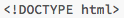
puis les bornes suivantes qui contiendront tout les éléments mentionnés après ça
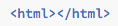
Ensuite on prépare l'en-tête qui donne les bases: il est délimité par les bornes
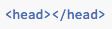
Dans l'en-tête, on met les trois éléments suivants:
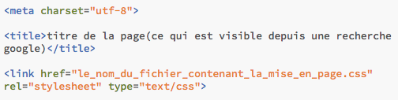
- Cette ligne sert à dire à l'ordinateur qu'on est dans une police humaine
- Cela donne le titre
- cela permet de lier le fichier css (soit la mise en page) à la page html (soit le contenu).
Enfin tout le texte est inclus dans les bornes
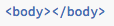
Le corps du texte
Pour écrire, on utilise
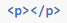
Pour écrire en gras on utilise
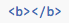
Pour écrire en italique
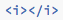
Pour écrire un titre on utlise les commandes suivantes. Chaque fois que les numéros augmentent, cela veut dire que cela passe en sous-titre de l'élément d'avant.
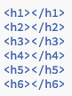
Pour faire des listes ordonnées, on utilise la première structure et pour une liste désordonnée, on utilise la deuxième structure
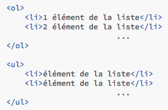
Les images
Alors pour les images, c'est presque encore plus simple, il suffit de mettre l'instruction suivante:
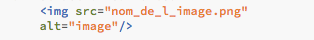
Explications:
src donne l'adresse de l'image
alt donne ce qu'on voit quand l'image n'arrive pas à se charger
Attention:
- Il n'y a pas de bornes fermantes mais il faut bien mettre le slash à la fin pour auto-fermé la borne
- c'est bien src et non scr
- ne pas oublier le .png ou .jpg a la fin de l'image
- les guillemets ne sont pas là pour la décoration il faut les mettre!
Les liens
Un truc quand même assez pratique, c'est qu'on peut mettre des liens en html (ça permet de naviguer de page en page, soit d'utiliser internet!!!)
Pour le faire, on utilise l'instruction suivante:

Explications:
Le a, c'est le type de borne pour mettre un truc internet
à l'interieur de la première borne, on met le lien de la page avec href
ce qui est entre les deux bornes s'affichera sur la page
Attention:
Les guillemets, c'est toujours pas fait pour les chiens
il faut bien marquer le lien sinon c'est 404
Exemple
Ici un petit exemple et au pire vous accédez au code source de ma page et vous avez un exemple grandeur nature
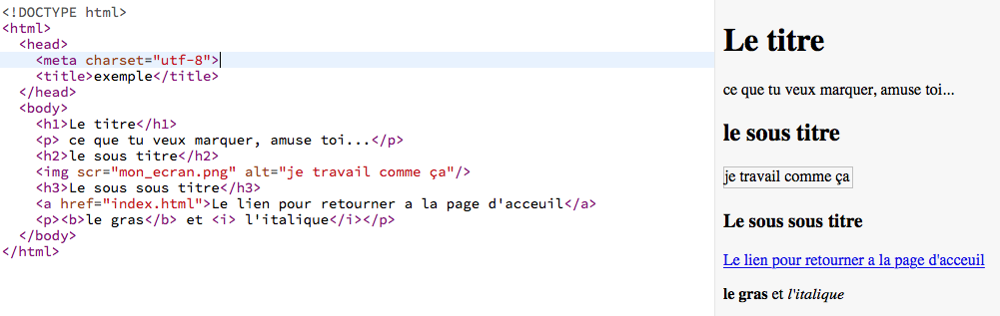
Conclusion
N'OUBLIEZ PAS LES GUILLEMETSet de bien fermer les bornes correctement
Le CSS
La base
La syntaxe de base c'est ça :
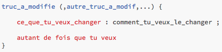
Qu'est ce qu'on peut modifier
On peut modifier énormément de choses tel que la couleur,la taille de la police, le fond ou encore les espacements
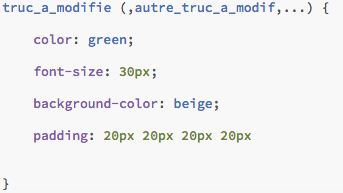
Repartir d'ici
La page principale
Mes sympathiques projets